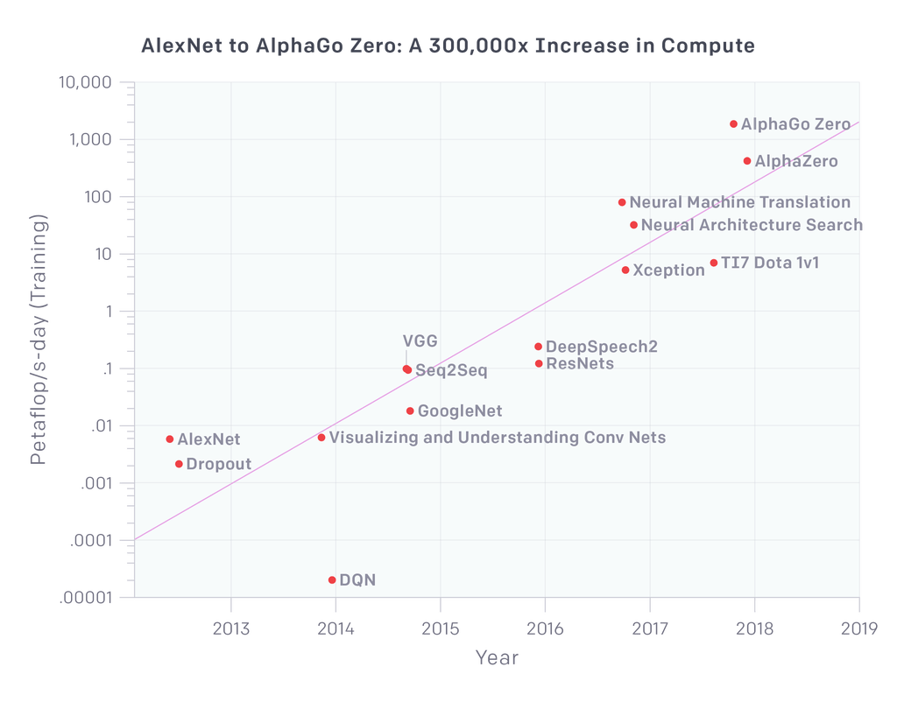
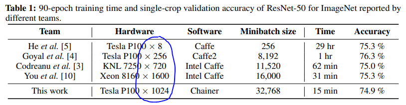
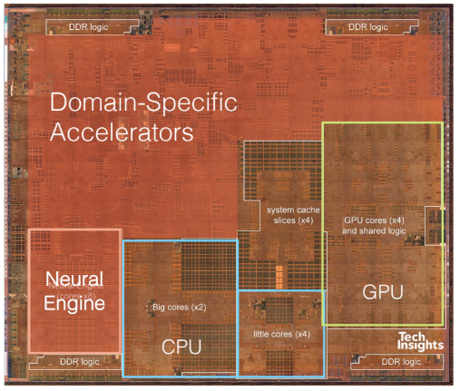
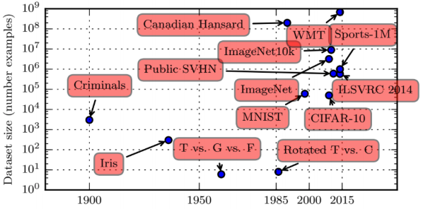
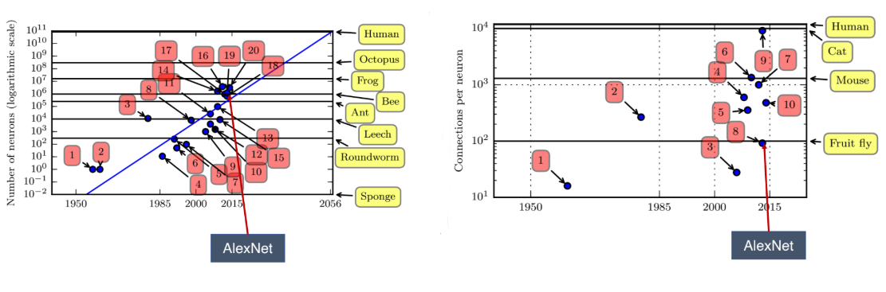

Course Notes: EE290-2 Hardware For Machine Learning
Notes for the UC Berkeley Course, EE290-2 Hardware for Machine Learning, Spring 2020.
Lecturer: Prof. Dr. Sophia Shao
Main topics:
- Deep Neural Networks
- Quantization
- Development Platforms
- Kernel Computations -Dataflows
- State of the art accelerators
- Mapping
- Sparsity
- Hardware/Software Co-Design
- Other NN architectures: RNN, NLP, RM, RL etc
- Advanced Technology
- Training
- ML for Hardware Design, Power Estimation etc.
Notes: Lecture 1
The goal is to make efficient hardware for Machine Learning and Deep Learning applications. The idea is that, we can design massively parallel architecture with hardware level optimizations by exploiting the knowledge of key machine learning algorithm characteristics.
Introduction to Deep Learning
Deep Learning models have grown vastly in size and require large amounts of compute power. Such DL kernels run on every compute device such as, Mobile Devices, Drones/Robots, Workstations, Data Centers etc.
The figure below from OpenAI shows the exponential increase of compute for AI training. This has been largely attributed to modern hardware development. 
How hardware intense this could get, as shown in this paper, is as follows: 
Ques: What is 90epoch? answer goes here.
Moore’s Law is destined to cease in the coming years as the technology size has shrunk down to 5nm so that the gate lengths get as thin as a few layers of atoms. Domain specific accelrators and a vertical integration approach would be the dominant way forward to achieve application speedups and meet the high compute requirements of Deep Learning Kernels. The following figure shows the teardown of IPhoneXS and the number of specialized kernels. The number of specialized IP blocks such as the Domain Specific Accelerators, Neural Engine etc has grown nearly in a linear fashion Ref: Shao et.al. IEEE Micro 2015 from abut 9 in the ARM A4 processor in 2010 to about 40 in the ARM A11 in 2017.

Deep Learning Rigs:
- NVIDIA Volta V100 GPU:
- NVIDIA DGX-2 = 16 \(\times\) Tesla V100.
- Power: 10kW
- Cerebras: Wafer-Scale Deep Learning
- 1.2 Trillion Transistors
- 46,225 mm\(^2\) silicon die area.
- 400,000 Optimized Cores
- 16GB Onchip Memory
- TSMC 16nm
- Challenges:
- Process Variations
- Heating
- Routing/Interconnects, Second-order/higher-order effects etc.
- Tesla Self-Driving Computer
- 96\(\times\)96 MACs
- 32MB SRAM/instance
- Google TPU
How to Compare Performance of Hardware?
More on this in later lectures
Notes: Lecture 2
AI: The science and engineering of creating intelligent machines. - John McCarthy, 1956.
ML: The field of study that gives the computers the ability to learn without being explicitly programmed. - Arthur Samuel, 1959.
DL: Seek to exploit the unknown structure in the input distribution in order to discover good representations, often at multiple levels. - Yoshua Bengio, 2012.
Three waves of NN came before present day scenario: Cybernetics (1940s-60s), Connectionism(1980s-90s) and Deep Learning(2006 - present). The size of dataset increased dramatically which made neural networks possible. Also hardware caught up and we could get better performance from the NN architectures. For example, CIFAR10 has 60,000 of 32\(\times\)32 images: 50k training+10k Test, arranged in 10 classes (eg. airplance, automobile, cat, bird etc) - 6000 images per class. The following figure shows dataset sizes from Goodfellow et.al.

Increasing data-sizes implies Increasing Model Sizes as well. Model Size increase implies increase in:
- Number of Neurons
- Number of connections per neuron.
This is largely do to the availability of better hardware and this trend, it seems, would continue in the forseeable future. The following figure shows the increasing model sizes based on aforementioned criteria.

Basics of ML: Dataset and Optimization methods
“A computer program is said to learn from experience (E) with respect to some task (T) and some performance measure (P), if its performance on T, as measured by P, improves with experience E.” - Tom Mitchell, 1998.
For example: Spam e-mail classification:
- Task (T): Predict emails as spam or not spam.
- Experience (E): Observe users label emails as spam or not.
- Performance (P): Number of emails that are correctly predicted.
ML Algorithms are:
- Supervised: Data + labels given. e.g. Classification and Regression.
- Unsupervised: Data only. No labels. e.g. Clustering
- Reinforcement Learning: Interact with environment and learn.
- Self-Supervised Learning: Contact:- Yann LeCun. ;)
In nearly all ML algorithms, we can identify T, P and E as follows:
- Dataset \(\rightarrow\) Experience(E)
- Cost (loss) function \(\rightarrow\) Performance Measure (P)
- Model + Optimization Method \(\rightarrow\) Task (T)
Example: Linear Regression
Linear Regression is supervised learning from a dataset to estimate a value (that may or may not be in the original dataset) based on given datavalues. E.g. find the real-estate sale price (US Dollars) in the given area, given dataset of sale values of different plot sizes in a particular area.
How it works? We have data with Labels.
Partition the data in two: (1) Training Set (to train the model), and (2) Test Set (to test the trained model) and (3) Validation Set.
An overfitting or underfitting of model renders the model inefficient and returns wrong results.
More detailed notes on Linear Regression is available in another blogpost.
Basics of Deep Learning
AlexNet
We have discussed AlexNet in detail in the review post, here.
Lecture 3: Quantization
Some other interesting Stuff:
Tips for writing paper reviews:
- Motivation for the work.
- Proposed Solution.
- Evaluation of the proposed solution.
- Analysis of identified problem, proposed solution and evaluation.
- Future Directions for the research.
- Queries.